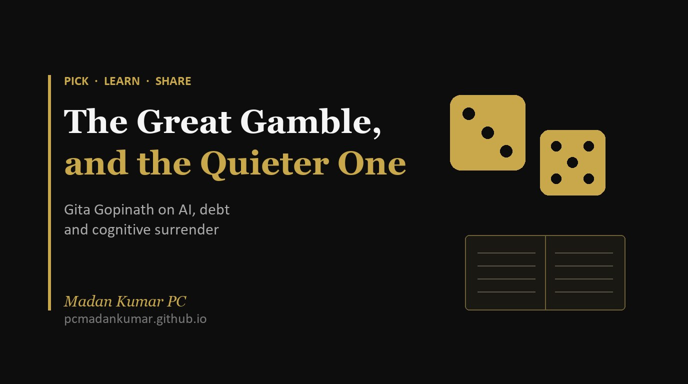

The Great Gamble, and the Quieter One in Our Classrooms

What Gita Gopinath said about the world economy, AI, and the cognitive surrender she fears in students.
I sat down to watch an economist talk about debt, tariffs and the dollar. I came away thinking about my students.
Gita Gopinath was the IMF’s Chief Economist and then its First Deputy Managing Director. She is now back at Harvard as a professor. In a long conversation with Raj Shamani on Figuring Out [1], she said something she could not have said while in office: that the world is taking a “great gamble”. Most of the episode is about money. The part that stayed with me is about learning.
The big gamble, in one paragraph
Her starting point is a paradox. Global growth for 2025 and 2026 looks almost exactly as forecast back in 2024, before anyone knew about the new tariffs, the AI boom or the latest wars. On paper, nothing has changed. Underneath, a great deal has. Tariffs and conflict are pulling growth down. A wave of AI investment, close to a trillion dollars in 2026 alone, is pushing it back up. The two are cancelling out, for now. She calls that a gamble because nobody planned it, and nobody can be sure the AI side will keep paying off [1].
She is frank about the risks. She expects a correction in AI valuations, though she says no one can tell when. She worries more about government debt than about tariffs: global public debt is heading towards 100% of GDP, a level last seen after the Second World War. And on where AI is taking jobs, her honest answer is that “even the AI labs themselves are only learning about how their own creations are working” [1].
India’s opening
She sees one clear opportunity for India. The world is looking for new manufacturing partners, and India is still not a big part of global supply chains. What holds us back is familiar: court cases that drag on for years, land and business rules that are hard to navigate, and the experience of being “harassed by officials”. Her point is that the same choke points that slow Indian entrepreneurs also keep foreign investors away [1].
The part that is about us: cognitive surrender
Near the end, Raj raised an idea she has spoken about before: cognitive surrender. It means handing the struggle of thinking over to a machine before you have built the expertise to judge what it gives you.
She did not treat it as a small worry. She compared this moment to the pandemic years, when school children lost learning they never fully got back. “I am worried that we are going through a similar period right now,” she said [1]. The comparison holds in another way too. In 2020, children with better devices and better schools lost less. The same gap is opening now, between schools that are rethinking how they teach and schools that are not.
She gave evidence from her own classrooms. At Harvard, there is now a big difference between how students perform on work done at home and on tests taken in class. Performance in class has dropped [1]. That matches what I wrote last month about a large trial where students with free access to an AI tutor did much better in practice and much worse in the exam once the tool was taken away [2].
Her line on expertise is the one I keep returning to. AI is wonderful when you have expertise. She uses it every day, and it helps her. “But if you have no expertise, then you’re completely substituted out” [1].
Three habits she recommends
When Raj asked what a 25 year old should do, she did not say “avoid AI”. She gave three habits.
- Use AI to go wider, not to skip the struggle. Ask it for new versions of a problem, pitched at your level. But do the real work yourself. “If I’m going to write an essay, I’m going to write the essay from start to finish,” she said, even when a button could do it in two seconds [1].
- Value the human questions. She finds AI excellent once a model is set up, and weak at the start: deciding “what is the question I’m trying to answer, what are the ingredients I want to put in” [1]. That framing work, she argues, is why the social sciences may hold up better than many expect.
- Keep learning together. Study groups existed partly because a classmate might know the answer. Now a machine always does, and students are dropping the groups. She sees that as a mistake, and points to an MIT report that documents the drop [1].
What I am taking into school
Her practical advice for teachers is the simplest part of the episode. At Harvard, she tells students they may use AI to learn the material, then tests them in class without it [1]. The incentive does the work. Students still use the tool, but they use it to understand, because they know they will have to stand on their own.
For our schools, I would turn that into three questions for every department:
- Where in our assessment do students show what they can do without AI, and is that part big enough to matter?
- Are we teaching students how to use AI to practise, question and check, not just to produce?
- Are we protecting the time students spend thinking together, in pairs and groups, rather than alone with a screen?
A posture, not a prediction
Raj asked whether spending her life thinking about what could go wrong has made her a pessimist. She said no. Worrying is not the point. “If by thinking about what needs to be fixed, you’re like, I want to be part of the solution, then that’s very exciting” [1].
That is how I want to approach cognitive surrender in our classrooms. Not with panic about the tools, and not with a ban. With a clear plan for what our students must still be able to do on their own.
What is your school doing to keep the struggle in learning? I would love to hear about it on LinkedIn.
References
- Gopinath, G., in conversation with Raj Shamani (7 November 2026). How Money Is Created: Central Banks, Money Printing & Inflation. Figuring Out, episode FO585. YouTube. https://www.youtube.com/watch?v=dNIef2fGLQY. Quotations are taken from the episode; the cognitive surrender discussion runs from about 1:23:30 to 1:33:30.
- Madan Kumar PC (30 October 2026). When the Machine Can Write the Code, What Are We Teaching? https://pcmadankumar.github.io/blog/posts/when-the-machine-can-write-the-code.html
Numbers in square brackets point to the references above. Views on the economy are Gita Gopinath’s, as given in the episode.